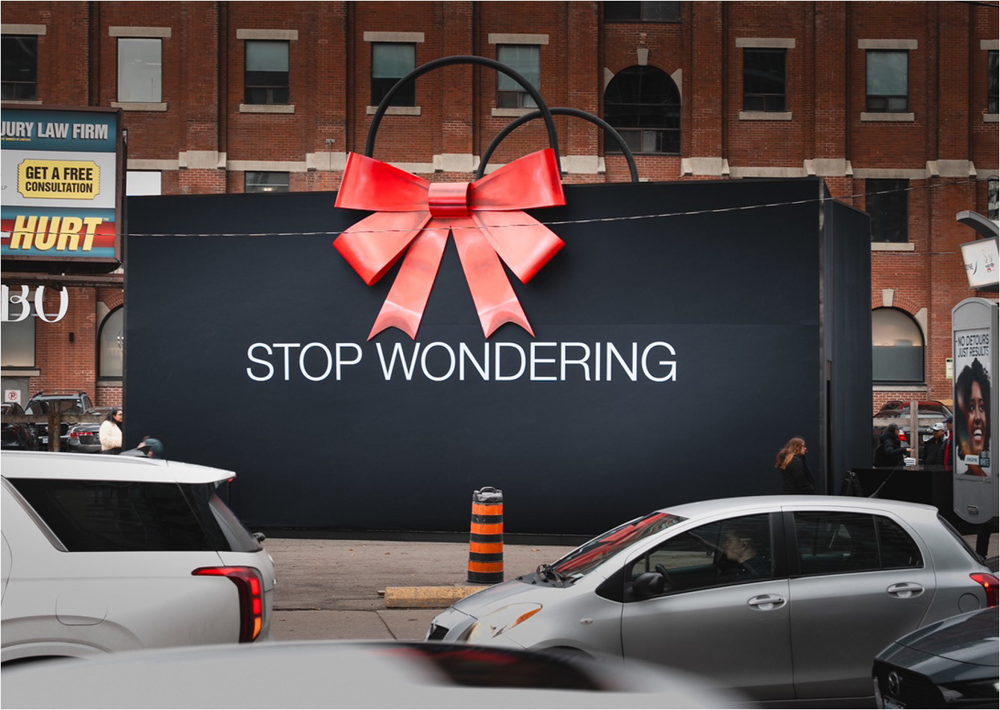
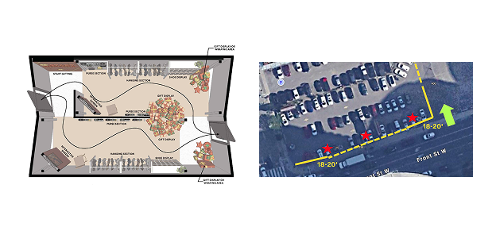
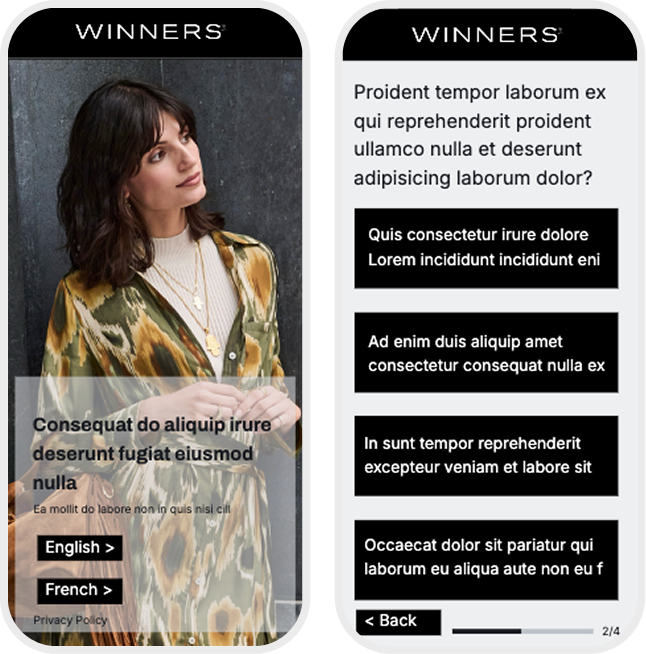
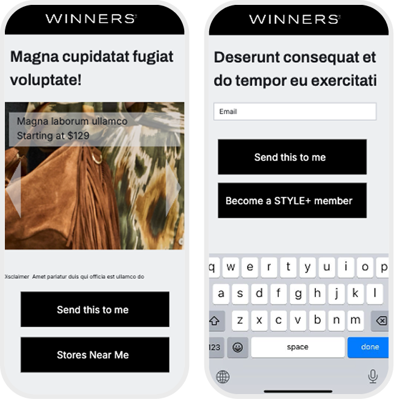
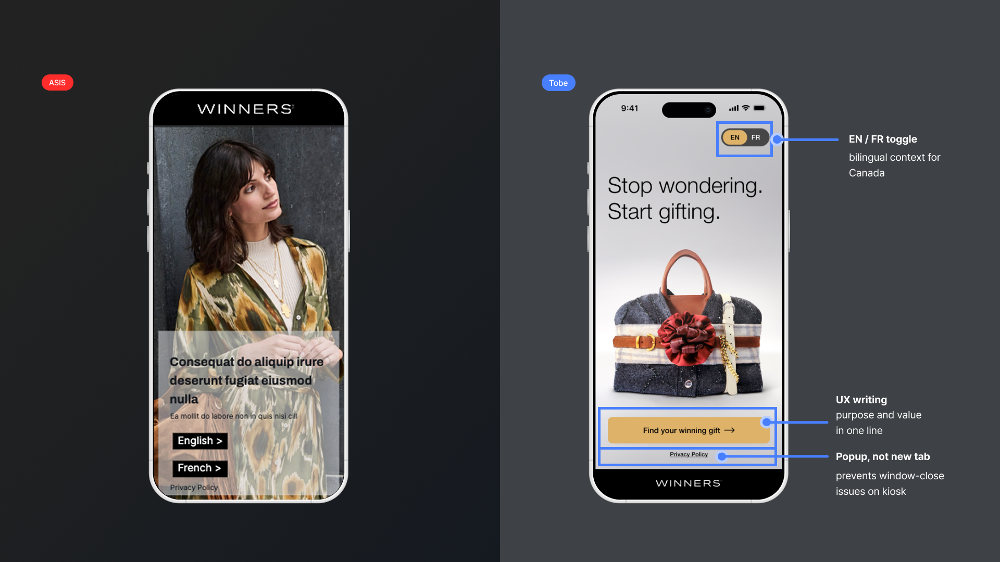
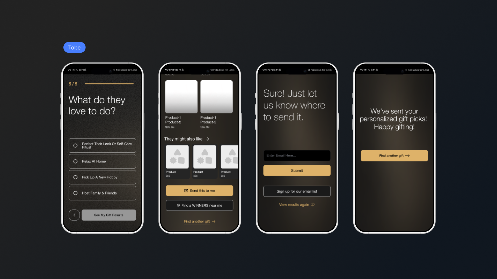
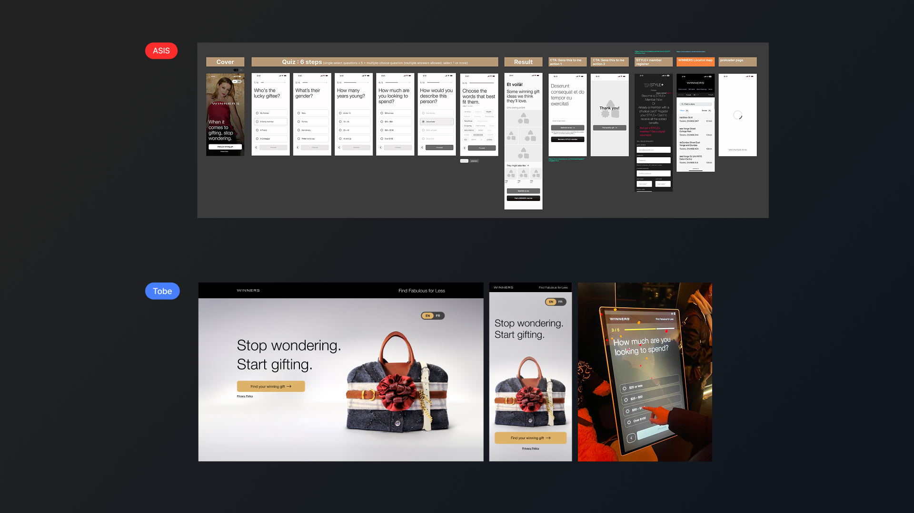

A kiosk-based gift-giving quiz designed for a 2-day Christmas pop-up in Toronto. Voluntary engagement · no rewards · no purchase path · just UX earning the next tap.

Winners is one of Canada's largest off-price fashion retailers · and it has no e-commerce site. Every digital touchpoint carries disproportionate weight because there is no other way to test digital behavior, capture intent, or build CRM from this brand. For the Christmas Big Black Bag campaign, a kiosk-based interactive gift quiz was designed for a 2-day pop-up in Toronto. The kiosk wasn't a campaign asset · it was the only digital feedback loop the brand had.
Business goals: brand engagement, in-store traffic, and email capture · not direct purchase conversion.
5 questions guide users to personalized gift ideas. The result screen offers three paths: email results, find a nearby store, or try again. Distributed via on-site kiosk and QR-to-mobile, so the same flow had to hold up across two contexts.
My scope covered branding (set upfront, which defined pop-up signage and product labels), the interactive quiz UX/UI, and the supporting site. This included owning the decision of how three competing business goals · engagement, in-store traffic, email capture · should be sequenced in the result screen hierarchy. The physical booth build was handled by a separate team.
Users made eye contact with the display, then walked past within 3 seconds. In a high-traffic pop-up environment with no staff direction, the screen offered no immediate signal of what the experience was or why it was worth stopping for. Entry was the first drop-off point.

Problem 1 · Site Observation 키오스크 배치도 + 현장 관찰 사진 (양쪽 위치)"Can I go back?" and "How long does this take?" · both signals of anxiety, not confusion. Without a progress indicator or the ability to edit answers, users felt committed to an unknown flow. Anxiety, not difficulty, was driving drop-off intent.
Two sub-issues surfaced: unclear instructions and expected effort, and no option to revert a wrong selection.

Problem 2 · Mid-Flow Friction QA 피드백 문서 + As-Is 화면 (진행상태/뒤로가기 부재)"Signing up feels like too much" and "I want to see other results" · users weren't confused, they were overwhelmed. The result screen presented three business goals simultaneously: email capture, store direction, and re-engagement.
With no clear hierarchy, every action felt equally weighted. When everything is a priority, nothing gets chosen.

Problem 3 · Result Screen CTAs As-Is 결과 화면 · 세 개 CTA가 동등하게 경쟁Each friction point mapped to a single behavioral hypothesis · framed before design, validated through live behavior and internal QA.
H1 · If the entry screen communicates value before asking for any action, engagement rate will be higher than a question-first approach.
46% completion · achieved with zero incentive structure in a walk-by pop-up. No loyalty rewards, no purchase path, no staff direction · just UX earning every next tap. Start-to-completion parity suggests the entry barrier was effectively cleared. Granular start rate was not captured · a known measurement gap addressed in Reflection.
H2 · If users feel in control of their progress, completion rate will increase.
"Love that I can go back" · "Easy to follow" · anxiety neutralized.
H3 · If post-completion actions are clearly prioritized, users will take meaningful next steps.
Resolved after adding "Find another gift" as the re-engagement lead.
The core hesitation: not knowing what this is. One-line copy communicates purpose instantly. A single CTA lowers the cost of starting.
Three design decisions targeted the entry drop-off: EN/FR toggle for Canadian bilingual context · UX writing that places purpose and value in one line · popup, not new tab, to prevent window-close issues on the kiosk hardware.

Solution 1 · Cover & Progress As-Is / To-Be 비교 + 3가지 디자인 결정 어노테이션"Send this to me" leads as the primary CTA · it's what the user came for. Email input unlocks the subscription prompt naturally · business goal served as a consequence of value, not a gate. "Find another gift" drives re-engagement without dead-ending the flow.
Mid-quiz, the progress bar and back-navigation returned control to the user · resolving the anxiety named in QA ("Can I go back?"). The flow itself dropped from 6 to 5 steps · every removed step was a removed drop-off opportunity.

Solution 2, 3 · CTA Hierarchy To-Be 4 화면 · primary/secondary CTA 우선순위Voluntary · no incentive · no purchase path. Achieved by reducing the flow from 6 to 5 steps and lowering the cost of starting.
Over 2 days, in a walk-by pop-up with no staff direction · the screen itself had to earn every tap.
1-in-4 completers emailed their results · translating a physical pop-up touchpoint into a measurable CRM entry. For a retailer with no e-commerce, this is a rare digital signal tied directly to in-store purchase intent, and validates the CTA hierarchy redesign as the primary driver.
Despite cold weather and on-site wait times later in the day, the majority of users finished the quiz · the flow held under conditions the original brief did not account for.
QA feedback shifted from "Can I go back?" to "Love that I can go back" · the progress bar and back-navigation directly resolved the named friction.

Outcome · Final Flow As-Is (6단계) → To-Be (5단계) 전체 플로우 비교The 25% email opt-in is not just a CRM number · it's a feedback loop a model could learn from within a single campaign cycle.
Integrate AI-powered personalization into the quiz logic · product recommendations dynamically ranked by real-time inventory and seasonal performance data, not static rules. Each session feeds the next.
Extend the physical-to-digital journey. The post-quiz moment is the opportunity · 25% email opt-in signals the value exchange is there. Next iteration would follow users from in-store kiosk → email → store visit, measuring the full loop instead of stopping at completion rate.
Design analytics structure upfront. The pop-up environment limited what we could measure · some of the strongest behavioral signals only surfaced through on-site observation. Next version: drop-off tracking per step, session replay on consent, A/B on the cover screen copy.
I'd define the design system before the first screen · kiosk, mobile, and web each needed different component structures, and resolving that mid-build cost time that could have been spent on the edges of the experience (micro-interactions, bilingual copy nuance, result-screen polish).